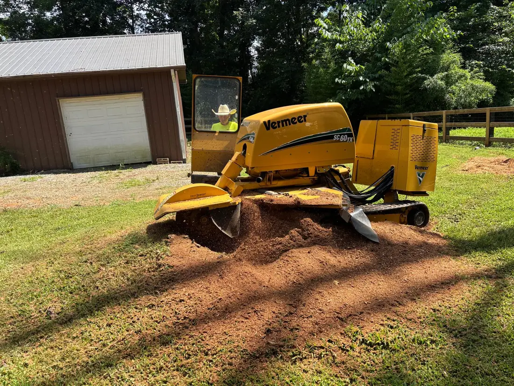
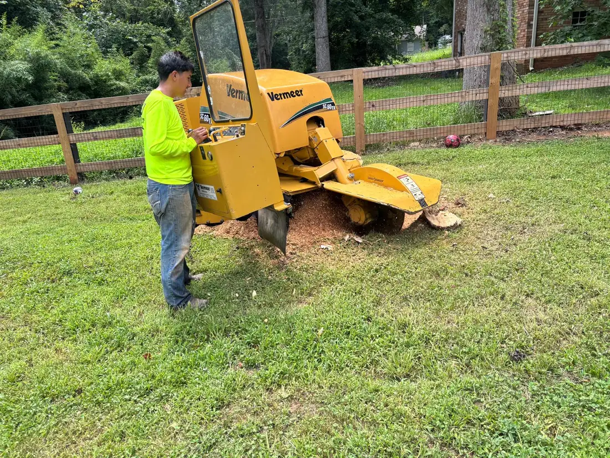
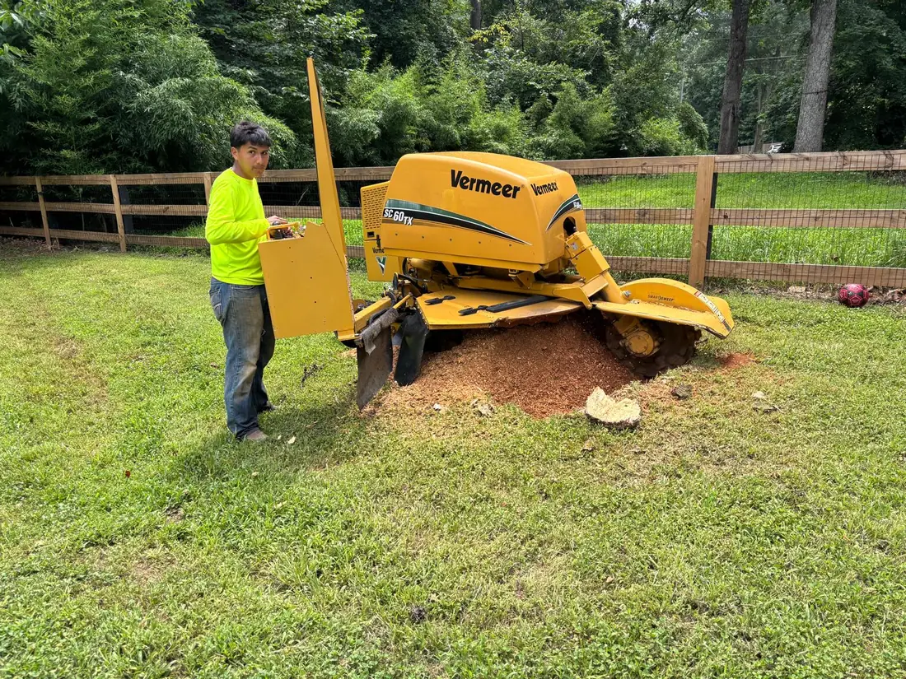

When a tree comes out, the stump it leaves behind is a bigger problem than most people expect. It's a trip hazard — especially with kids running around the yard — and it doesn't just sit there quietly.
Rotting wood pulls in termites, carpenter ants, and beetles that go looking for your house next, and it sprouts mushrooms and fungus as it breaks down. Plenty of species send up shoots from the stump again and again, so you end up fighting the same tree you already paid to remove. And every pass with the mower risks your blade.
Grinding solves all of it at once. We chew the stump down below ground level so you can put soil and grass right over the top and forget it was ever there.
Grinding beats digging the whole root out.
There are two ways to get rid of a stump: grind it down, or excavate the entire root ball. Full extraction tears up a huge area of the yard, costs more, and takes far longer.
Grinding is faster, cheaper, and leaves the surrounding lawn almost untouched. We take it several inches below grade — deep enough to top with soil and lay sod or seed, so there's no hump and no stump creeping back through the grass.
- Ground below grade, not just flush
- Surface roots handled too
- Surrounding lawn left nearly untouched
- Ready for soil, sod, or seed


You choose what happens to the chips.
Grinding turns the stump into a pile of wood chips. Want them gone? We haul them off. Want free mulch for the beds? We rake them where you want them. Your call.
The big surface roots running out from the stump get ground down too, so the whole area sits flat and clean when we're done — not a patch of shredded roots you have to work around later.
Planning to replant?
If you want grass or a new plant where the stump was, tell us up front. We grind deeper and top the spot with soil so it's ready to grow instead of sitting full of woodchips.
Stumps we've cleared nearby.
Everything that comes with the job.
Below-grade grinding
Taken several inches under the surface, not just cut flush to the ground.
Ready to replant
Topped with soil so you can sod, seed, or plant right over the spot.
Surface roots ground
The roots running out from the stump handled in the same visit.
Pest problem gone
Removes the rotting wood that draws termites and carpenter ants.
Chips your way
Hauled off or raked into the beds as free mulch — whatever you'd rather.
No more regrowth
Grinding stops the stump from sending up new shoots season after season.
Stump grinding, answered.
How deep do you grind?
What about the roots I can see?
Can I sod or plant over it afterward?
What do you do with the wood chips?
Still got a stump in the yard?
Send a photo on WhatsApp and we'll tell you what it takes and what it costs — no charge to ask.